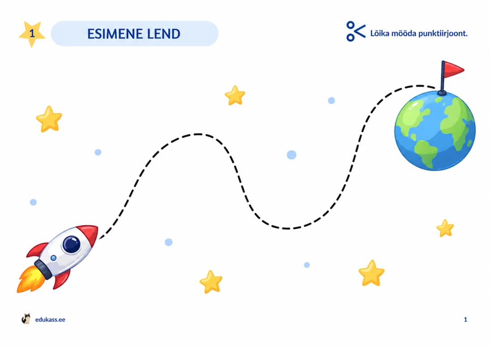
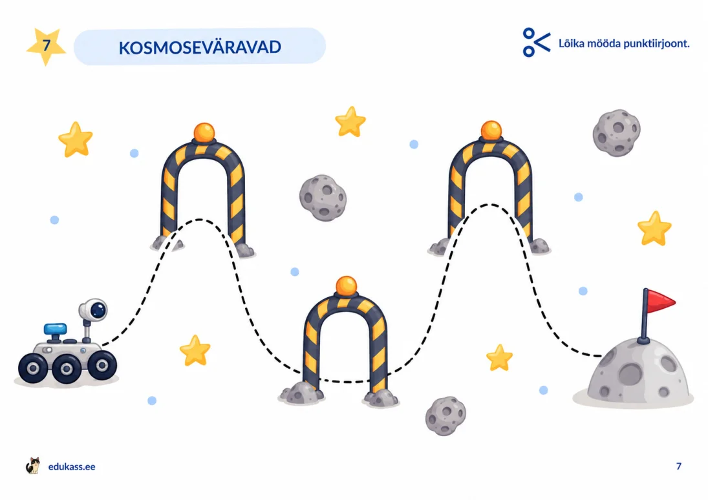
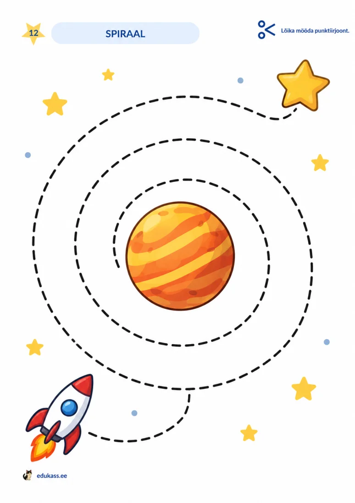
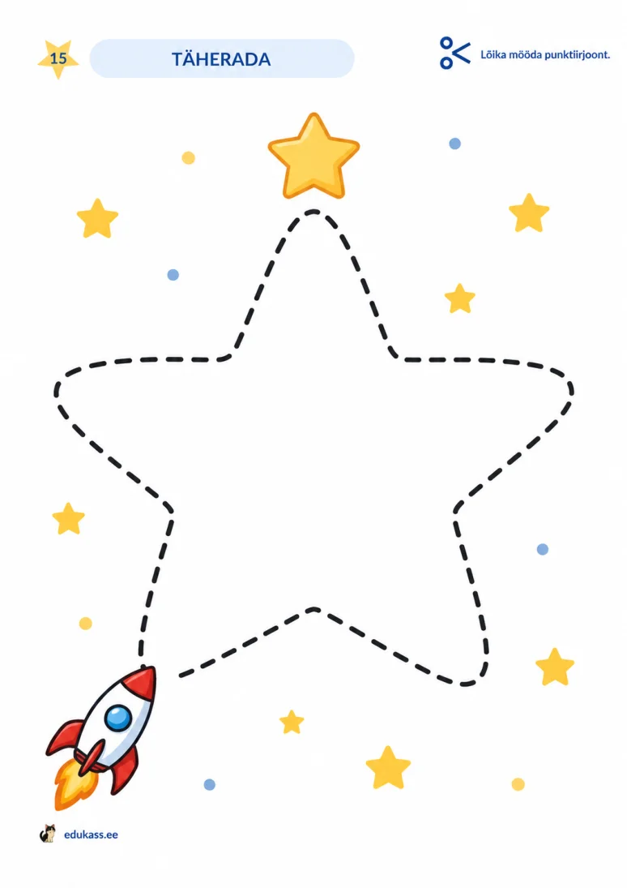
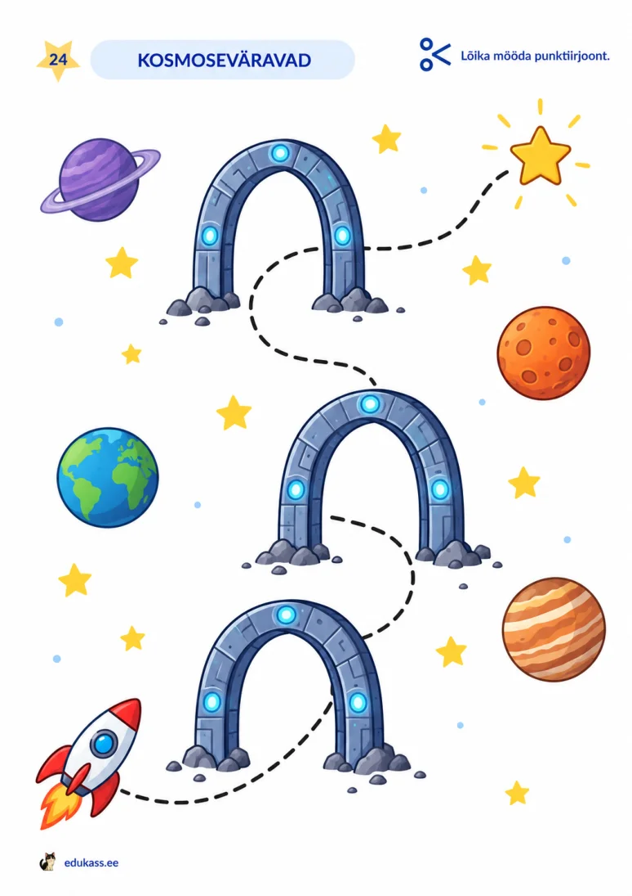
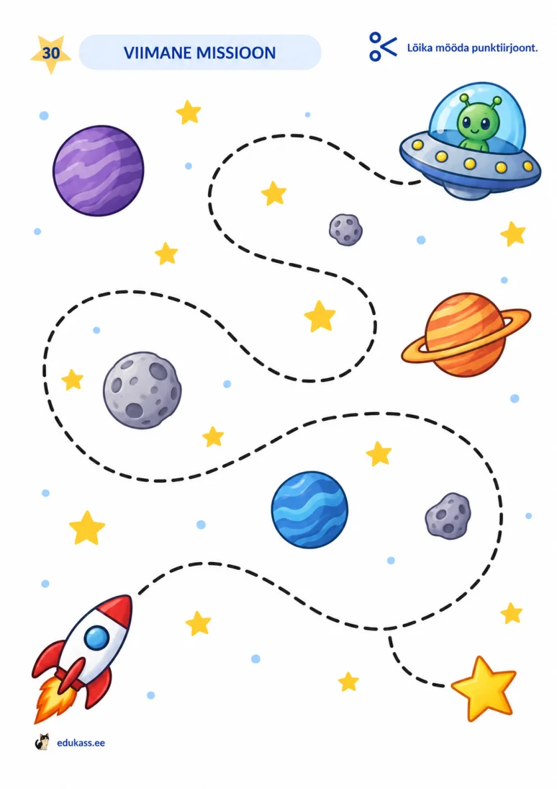

KÄELISED OSKUSED · PRINDITAV PDF
30 päeva lõikamistKosmos
TASUTA
30 kosmoseteemalist töölehte, mille abil laps harjutab mööda punktiirjoont lõikamist. Raketid, planeedid ja tähed muudavad laineliste radade, siksakkide, pöörete ja spiraalide lõikamise mänguliseks.
30 töölehteA4PDF · 10,3 MBTASUTA
Üks PDF-fail sisaldab kõiki 30 töölehte. Eelvaates on näidatud sama komplekti töölehed.






30 erinevat lõikamislehte · Kosmos
Kellele sobib?
Lapsele, kes oskab juba kääre kasutada ja mööda lihtsat joont lõigata. Materjali saab kasutada kodus, lasteaias või koolis täiskasvanu juhendamisel.
- Mööda erinevaid punktiirjooni lõikamine.
- Paberi pööramine ja lõikamissuuna muutmine.
- Silma ja käe koostöö ning lõikamistäpsuse harjutamine.
Kuidas printida ja kasutada?
- Laadi PDF-fail alla ja ava see PDF-lugejas.
- Vali A4-formaat, ühepoolne printimine ja automaatne lehe suund. Failis on nii rõht- kui ka püstpaigutusega lehti.
- Prindi tegelikus suuruses (100%). Vajaduse korral vali ainult soovitud leheküljed.
- Laps lõikab mööda punktiirjoont endale sobivas tempos. Soovi korral võib teha ühe töölehe päevas ja harjutusi korrata.